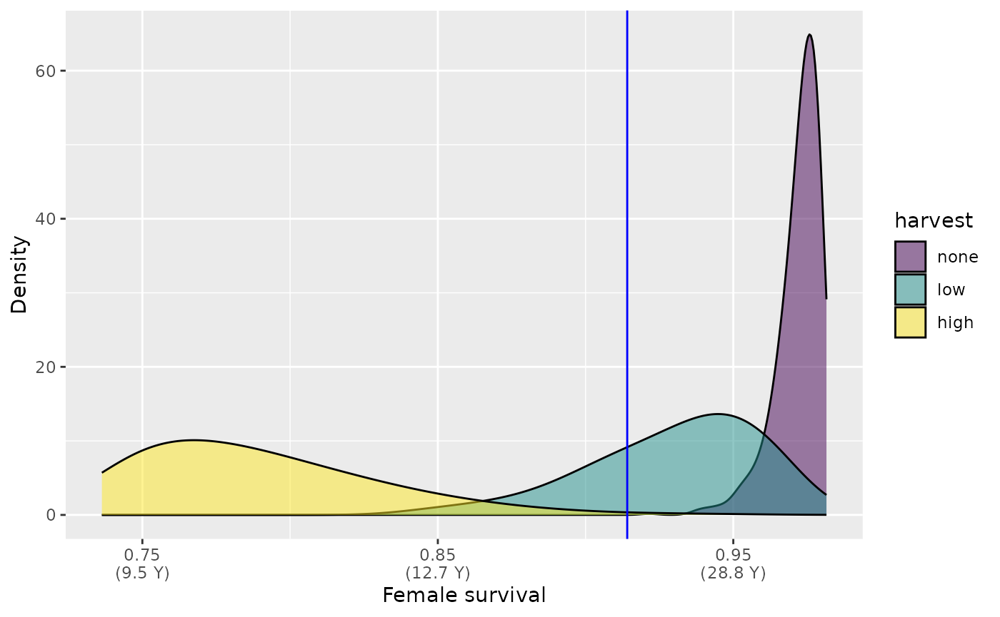
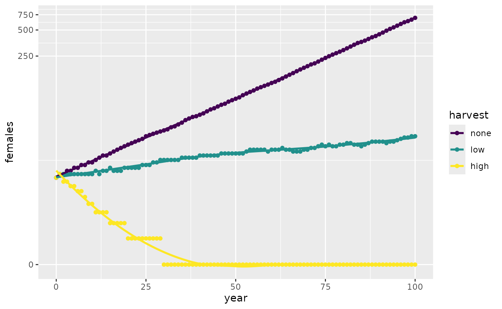

Adult survival scenarios
Source:vignettes/a03_Adult-survival-scenarios.Rmd
a03_Adult-survival-scenarios.RmdEstablish distribution of plausible adult survival values in the following scenarios:
- Unharvested, with and without recovery actions.
- Lightly harvested, with and without recovery actions.
- Intesively harvested, with and without recovery actions.
To be able to compare with and without recovery actions we need to include density dependence in the matrix projection models.
We use estimates of longevity to establish mean and range of annual adult female survival in populations for each scenario. This is then used to estimate the distribution “today”, before considering the effect of future actions (either positive e.g. recovery or negative e.g. continued harvest).
Unharvested (“none”),
mean 57.1 years, range 20 to 70 years, beta distribution.Lightly harvested (“low” - less than 2.5% per year),
mean 30 years, range 20 to 70 years, beta distribution.Intensively harvested (“high” - greater than 5% per year),
mean 22 years, range 20 to 70 years, half-normal distribution.
adult_survival <- TACAR::make_beta(survival_mean = 0.976987,
survival_min = 0.9215,
survival_max = 0.98153,
alpha = 40, beta = 40
)
#> Warning in TACAR::make_beta(survival_mean = 0.976987, survival_min = 0.9215, :
#> Less than 50% of survival values are within the desired range. Rescaling
#> values.
hist(adult_survival$within_range, probability = TRUE)
mean(adult_survival$within_range, na.rm = TRUE)
#> [1] 0.9720561
adult_survival_hunt_low <- TACAR::make_beta(survival_mean = 0.95244,
survival_min = 0.9215,
survival_max = 0.98153,
alpha = 400, beta = 400
)
hist(adult_survival_hunt_low$within_range, probability = TRUE)
mean(adult_survival_hunt_low$within_range, na.rm = TRUE)
#> [1] 0.9524175
adult_survival_hunt_high <- TACAR::make_half_normal(survival_mean = 0.96,
survival_min = 0.92,
survival_max = 0.97339)
# Plot the distribution
hist(adult_survival_hunt_high$survival_values, probability = TRUE)
mean(adult_survival_hunt_high$survival_values, na.rm = TRUE)
#> [1] 0.932805Compare the survival in populations under different hunting pressure.
df_survival <- rbind(
data.frame(distribution = "beta", hunt_level = "a_none",
female_survival = adult_survival$within_range),
data.frame(distribution = "beta", hunt_level = "b_low",
female_survival = adult_survival_hunt_low$within_range),
data.frame(distribution = "beta", hunt_level = "c_high",
female_survival = adult_survival_hunt_high$survival_values)
)
df_survival$hunt_levelf <- factor(df_survival$hunt_level)
levels(df_survival$hunt_levelf) <- c("none", "low", "high")
# Plot
mylabels <- c("0.92\n(19.7 Y)", "0.94\n(24.8 Y)", "0.96\n(34.8 Y)",
"0.98\n(64.0 Y)")
ggplot(data = df_survival, aes(x = female_survival,
group = hunt_levelf, fill = hunt_levelf)) +
geom_density(alpha = 0.5, adjust = 2) +
scale_fill_viridis_d("harvest") +
scale_x_continuous(breaks = c(0.92, 0.94, 0.96, 0.98),
labels = mylabels) +
xlab("Female survival") +
ylab("Density")
The figure shows the distribtution of adult female survival in populations under threee different scenarios. The x axis shows survival values with overall life expectancy in parentheses.
We can now use these distributions to explore how the populations are likely to change in the future. Here we follow the element selection example: https://cran.r-project.org/web/packages/popdemo/vignettes/popdemo.html#72_Nonrandom_matrix_selection
First run an example using the Intensively harvested population, with harvest continuing at 5% a year.
# Get matrix
# projection parameters
dt <- TACAR::pop01_param_poun()
# Population size constant.
nf <- 10
dt$adultF_n <- nf
# No data on density dependence for any South American freshwater turtle.
# Here include a generous 20% ceiling on maximum population increase
# in the case of harvested populations.
ceiling_threshold_high <- ceiling(nf + (nf * 0.2))
ceiling_threshold_low <- ceiling(nf + (nf * 0.1))
ceiling_threshold_none <- ceiling(nf + (nf * 0.05))
# Matrix from data.frame
stage_names <- c("a1", "a2", "a3", "a4",
"b1", "b2", "b3", "b4",
"c1", "c2", "c3", "c4",
"d1", "d2", "d3", "d4")
vpop <- unlist(dt[3 , stage_names])
pop_mat <- matrix(vpop, byrow = TRUE, ncol=4)
dimnames(pop_mat) <- list(c("_1", "_2", "_3", "_4"),
c( "a", "b", "c", "d"))
# stable stage structure
pop_ss <- popdemo::eigs(pop_mat, "ss")
# stable stage population numbers corresponding to number of females
pop_n <- nf * (pop_ss * (1/pop_ss[4]))
#create list of 100 matrices
ntimes <- 100
pop_mat_100 <- rep(list(pop_mat), ntimes)
#replace [d, 4] element of every matrix with new random number
a44 <- sample(na.omit(adult_survival_hunt_high$survival_values),
size = ntimes)
# "Perturbation" of 5% harvest
a44 <- (a44 - (a44 * 0.05))
pop_mat_100 <- mapply(function(A, r){A[4, 4] <- r; A}, pop_mat_100, a44,
SIMPLIFY = FALSE)
# For deterministic
pop_mat_high <- pop_mat
pop_mat_high[4, 4] <- (pop_mat[4, 4] - (pop_mat[4, 4]*0.05))
# Project and plot
poun_high <- popdemo::project(pop_mat_100, vector = pop_n, Aseq = 1:ntimes)
plot(poun_high, log = "y")
lines(0:ntimes, project(pop_mat_high, pop_n, time = ntimes), lty = 3)With continued harvest and no conservation actions the population declines rapidly. We now repeat the process and compare future changes for the three different scenarios.
# No hunting
pop_mat_100_none <- rep(list(pop_mat), ntimes)
#replace [d, 4] element of every matrix with new random number
a44_none <- sample(na.omit(adult_survival$within_range), size = ntimes)
# Update values
pop_mat_100_none <- mapply(function(A, r){A[4, 4] <- r; A},
pop_mat_100_none, a44_none,
SIMPLIFY = FALSE)
# Project
poun_none <- popdemo::project(pop_mat_100_none,
vector = pop_n, Aseq = 1:ntimes)
# Low hunting
pop_mat_100_low <- rep(list(pop_mat), ntimes)
#replace [d, 4] element of every matrix with new random number
a44_low <- sample(na.omit(adult_survival_hunt_low$within_range),
size = ntimes)
# "Perturbation" of 2.5% harvest
a44_low <- (a44_low - (a44_low * 0.025))
# Update values
pop_mat_100_low <- mapply(function(A, r){A[4, 4] <- r; A},
pop_mat_100_low, a44_low,
SIMPLIFY = FALSE)
# Project
poun_low <- popdemo::project(pop_mat_100_low,
vector = pop_n, Aseq = 1:ntimes)
# Data for plotting-Adult females at each time point for each scenario.
len <- length(poun_none)
Time.intervals <- 0:(len - 1)
adult_fe_none <- as.integer(trunc(poun_none * (popbio::stable.stage(pop_mat)[4])))
adult_fe_low <- as.integer(trunc(poun_low * (popbio::stable.stage(pop_mat)[4])))
adult_fe_high <- as.integer(trunc(poun_high * (popbio::stable.stage(pop_mat)[4])))
df_adult_female <- rbind(
data.frame(year = Time.intervals, hunt_level = "a_none",
females = adult_fe_none),
data.frame(year = Time.intervals, hunt_level = "b_low",
females = adult_fe_low),
data.frame(year = Time.intervals, hunt_level = "c_high",
females = adult_fe_high)
)
df_adult_female$hunt_levelf <- factor(df_adult_female$hunt_level)
levels(df_adult_female$hunt_levelf) <- c("none", "low", "high")
# Plot
ggplot(data = df_adult_female, aes(x = year, y = females,
group = hunt_levelf,
colour = hunt_levelf)) +
geom_point() +
geom_smooth(se = FALSE) +
scale_y_continuous(transform = "log1p") +
scale_colour_viridis_d("harvest")
#> `geom_smooth()` using method = 'loess' and formula = 'y ~ x'
These models are useful but could be more realisitic. The figure above shows that with no or little hunting the population numbers increase at such an unrealistic rate that we need to use a log scale to compare with the intensively harvested population.
For example, to enable us to explore potential future impacts of conservation actions it is important to consider how density dependence will affect the survival and transient dynamics of recovering populations. This will enable more robust estimation of expected outomces and answer questions such as how long will recovery take and how much will recovery cost?
As turtles are long lived species, the populations are highly sensitive to adult survival rates. Within stage-based matrix models this can be better explored by splitting adults into three stages:
young adult,
with lower survival and fecundity due to smaller body sizes.mature adults,
with greatest survival and fecundity due to body sizes and general health.elderly adults,
with lower survival and fecundity due to senescence.
There is no data available for Podocnemis unifilis on differences in survival/fecundity with age of adult females. So here we use data from other turtle species with similar life history and demographic characteristics. This includes Podocenmis expansa - where survival of different adult stages has been documented (Mogollones et. al. 2010). The Matrix Population Model developed in this study and others are freely available from the COMADRE database (https://compadre-db.org/Data/Comadre). Here we use a subset from COMADRE version 4.23.3.1 created on 24 March 2023.
# Data for Podocnemididae
# A COM(P)ADRE database ('CompadreDB') object with 2 SPECIES and 2 MATRICES.
comadre_podoc
#> A COM(P)ADRE database ('CompadreDB') object with 2 SPECIES and 2 MATRICES.
#>
#> # A tibble: 2 × 59
#> mat MatrixID SpeciesAuthor SpeciesAccepted CommonName Kingdom Phylum
#> <list> <int> <chr> <chr> <chr> <chr> <chr>
#> 1 <CompdrMt> 250117 Podocnemis_lewy… Podocnemis lew… Magdalena… Animal… Chord…
#> 2 <CompdrMt> 250118 Podocnemis_expa… Podocnemis exp… Arrau tur… Animal… Chord…
#> # ℹ 52 more variables: Class <chr>, Order <chr>, Family <chr>, Genus <chr>,
#> # Species <chr>, Infraspecies <chr>, InfraspeciesType <chr>,
#> # OrganismType <chr>, DicotMonoc <chr>, AngioGymno <chr>, Authors <chr>,
#> # Journal <chr>, SourceType <chr>, OtherType <chr>, YearPublication <chr>,
#> # DOI_ISBN <chr>, AdditionalSource <chr>, StudyDuration <chr>,
#> # StudyStart <chr>, StudyEnd <chr>, ProjectionInterval <chr>,
#> # MatrixCriteriaSize <chr>, MatrixCriteriaOntogeny <chr>, …